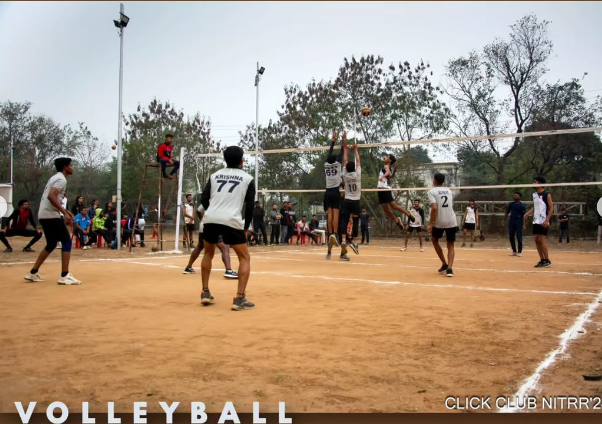
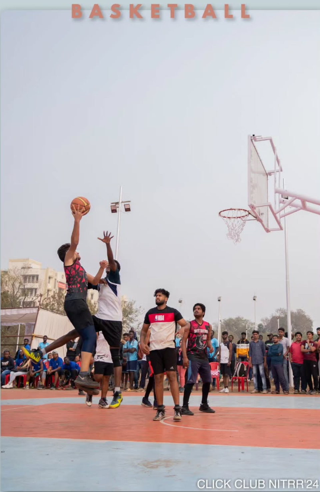
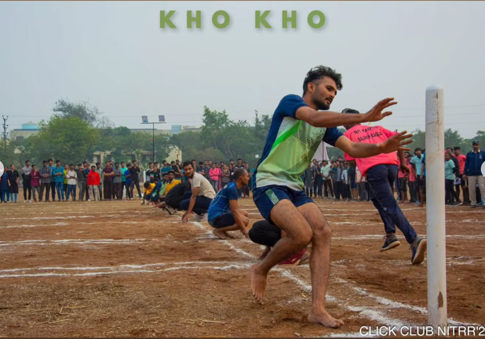
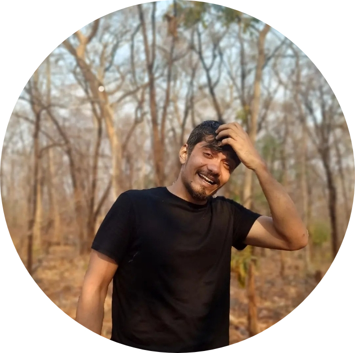

Shaurya

About Us
Zeal is like a determined image of relentless flying in the confident eyes of an infancy bird. You can bind it for a moment but certainly it can never be tied into shackles for a lifetime. Sports Committee NIT Raipur is a similar story of unending zeal and sports enthusiasm pulsating in the veins of it’s sophomores. Students with proven technical credentials unite with a common aim to nurture the sportsman inside every one of us to give a platform where quality of sportsmanship can be woven in each one of us. Shaurya has been at the helm of conducting all the sports activities in the institute. the committee organizes events Samar( the annual sports fest), Inter-branch tournaments, etc. The committee also helps in proper structuring and formation of teams which represent NIT Raipur in national level sports fest including Inter-NIT Sports meet. The committee has been instrumental in conducting sporadic practice sessions and fostering proper sports environment in the institution. We with umpteen trophies and acknowledgements can very proudly say that we have a very competent team in sports like Cricket, Football, Volleyball, Badminton, Basketball, Chess, Kho-Kho, Handball, Athletics and TT.
Activities & Events
SAMAR is the Annual College Sports Festival of NIT Raipur was organised by "SHAURYA" The Sports Committee of NIT Raipur. It is a four day event held in the month of December in which students from various colleges across Chhattisgarh came forward to participate. Over the years SAMAR has evolved and expanded to become the best sports extravaganza. One experiences the 4 days of awesomeness here. Being the most awaited event of the year, it is a platform where youths get together and showcase their talents and sportsmanship. NIT Raipur sports boasts of a rich culture, thriving immense participation. Samar was one of the best experience at NITRR and has a rich string of memories linked with it. SAMAR brings with it a great opportunity to show your endeavour along with fun and enjoyment.
Gallery



Over All Coordinators

Arpit Singh Jakhar
Contact: 1234567890

Coordinator Name 2
Contact: 0987654321
Join Us
Applications open from [start date] to [end date]